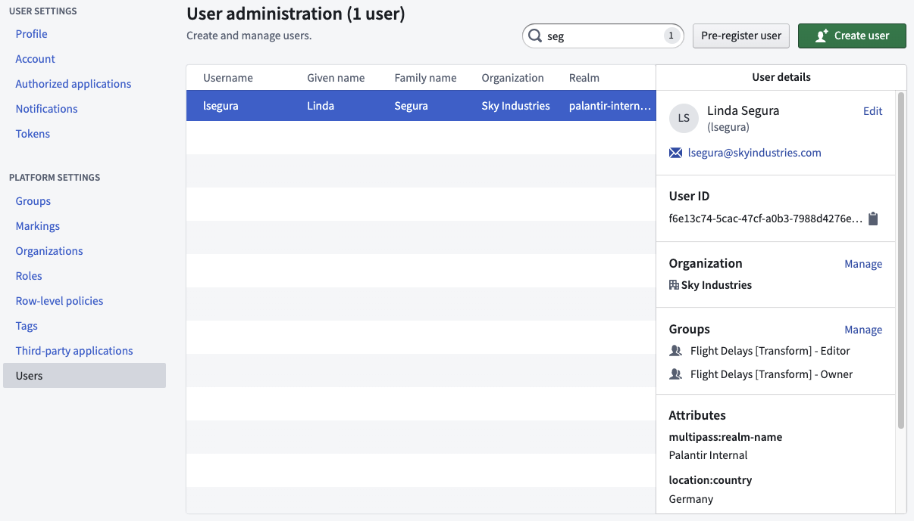

Access the user administration page by going to Account > Settings in the navigation sidebar. Then, select Users in the Platform Settings section of the sidebar.

From here, you can view different information about users within Foundry:
Learn more about restricted views.
Platform administrators with preregister permissions can perform actions on users before they ever log into Foundry. Administrators can create usernames, give users appropriate group memberships, assign Organization and Marking access, and more to ensure the new user has proper access to resources when they first log in.
:::callout{theme="warning"} The created username needs to match the userâs login username exactly for the preregistered actions to work. :::
Foundry user accounts are automatically considered inactive if no successful login has occurred for 30 days. Inactive accounts behave in the same way as active accounts in Foundry, except that all tokens for the inactive user account are invalid while the account is inactive.
The inactive user account will be automatically set to active after a successful login, which re-enables all disabled tokens. No administrator action is required for this reactivation.
It is possible to exclude users in certain Foundry groups and authentication realms from this inactivity behavior. Contact your Palantir representative for more information about these exclusions.
:::callout{theme="warning"} If a user encounters the message: "Your account has been locked. Contact your support person to unlock it, then try again." upon login, contact your Palantir representative for account unlocking. :::
If a login fails with the error Your account has been disabled, it means the user account has been deleted. You can reach out to an administrator to find and "undelete" the account using the getDeletedUsers and undeleteExternalUser endpoints, respectively. Organization administrators with Manage membership permissions are able to call these endpoints. Example curl requests are listed below.
This step is optional and only required if the user ID of the deleted user is unknown.
curl -XGET -H "Authorization: Bearer $TOKEN" '<FOUNDRY_URL>/multipass/api/administration/users/deleted?pageSize=<NUMBER_OF_RESULTS_TO_RETURN>&pageToken=<PAGE_START_TOKEN>'
Note: The max page size is 1000.
curl -XPOST -H "Authorization: Bearer $TOKEN" '<FOUNDRY_URL>/multipass/api/administration/users/<USER_ID>/undelete/external'